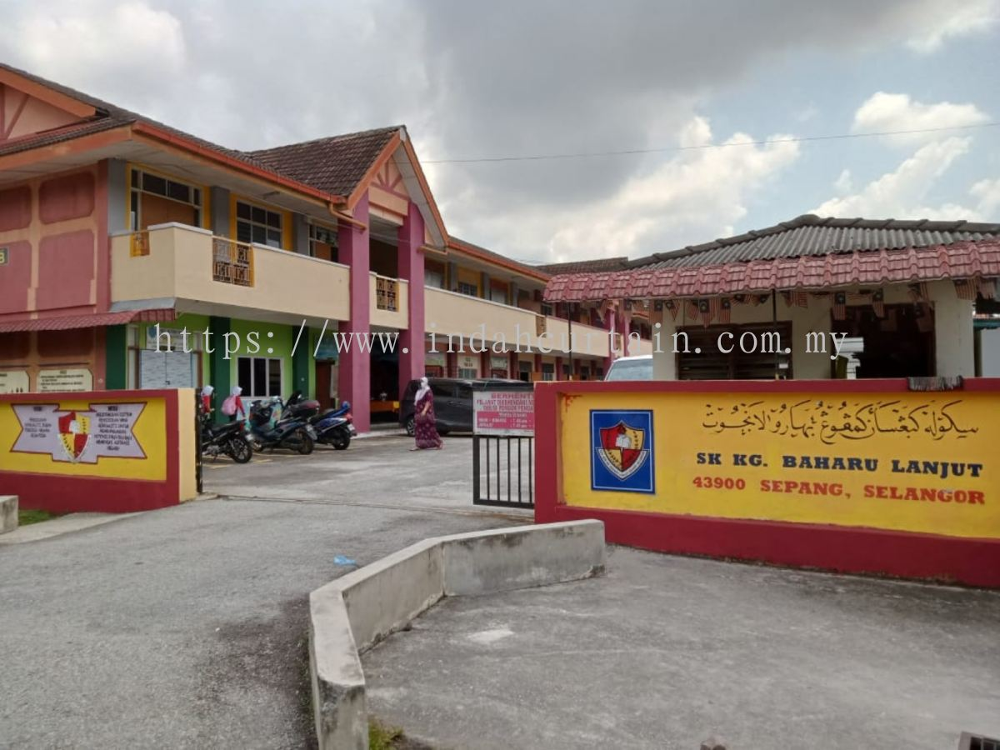
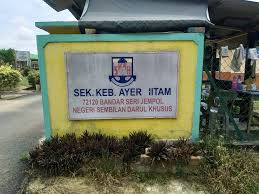
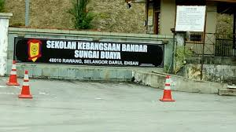
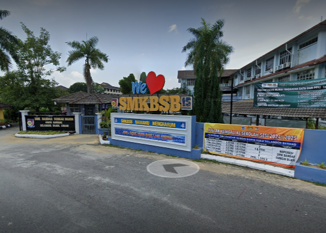
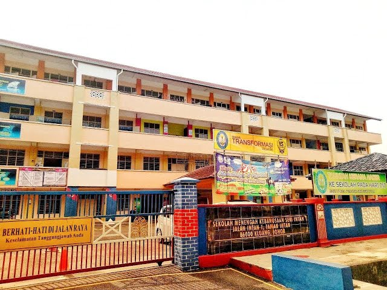
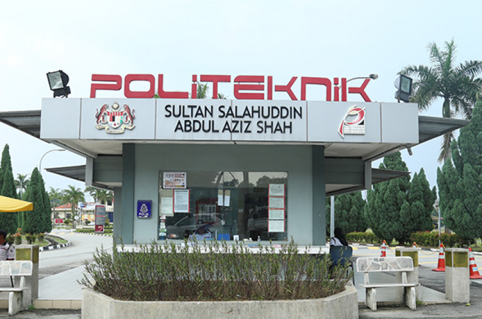
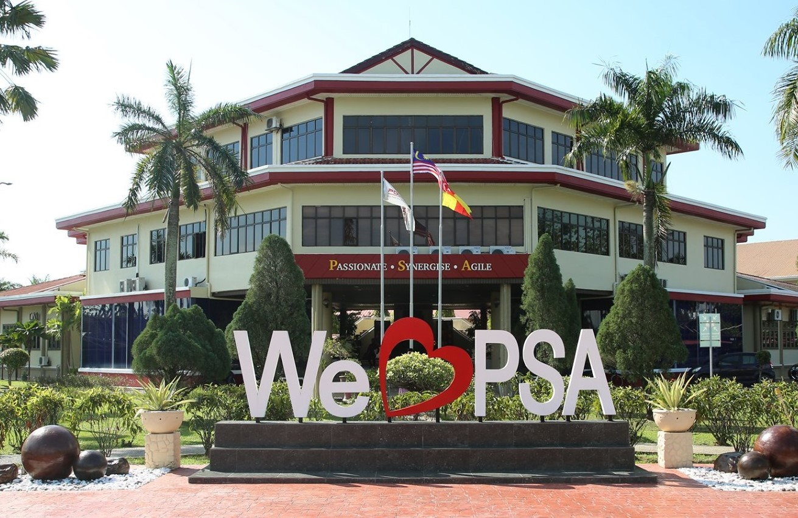

My Education Journey
Kindergarten
I started attending kindergarten at the age of 5 at PASTI, Kampung Baharu Labu Lanjut, Sepang, Selangor
Elementary School 1
I attended primary school from grade 1 to 2 and a half at SK Kampung Baharu Lanjut, Sepang, Selangor
Elementary School 2
Then I moved and spent the other half at SK Ayer Hitam Bandar Seri Jempol, Negeri Sembilan
Elementary School 3
Upon moving to Rawang, Selangor, I attended SK Bandar Sungai Buaya in Rawang for grades 3 to 6
Secondary School 1
I continued to secondary school at SMK Bandar Sungai Buaya in form 1 to form 4

Secondary School 2
I moved again and finished form 5 in SMK Seri Intan in Kluang, Johor
Diploma
I continued my studies at a higher education institution (IPTA) in Diploma level at Politeknik Premier Sultan Salahuddin Abdul Aziz Shah (PSA) in Shah Alam, Selangor
 Degree (Current)
Finally, I am currently pursuing my bachelor's degree at University Teknologi Mara(UiTM) in Merbok, Kedah